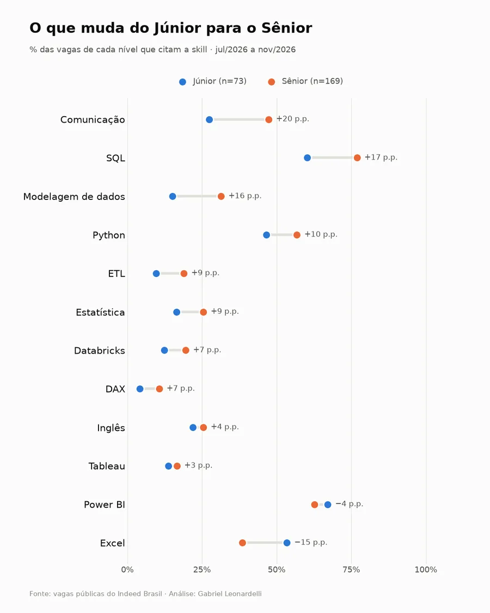

Explore os dados
Filtre por senioridade, estado ou vagas remotas. O ranking, os estados e as listas de vagas se atualizam. Quando há filtro, a barra cinza mostra o total de vagas, para comparar. "KPIs / Indicadores" fica fora do ranking, como explicado no método.
Skills mais pedidas
% das vagas que citam cada skill · clique em uma skill para ver as vagas
Onde estão as vagas
Estados com mais vagas neste recorte · clique para filtrar
Senioridade
% das vagas do recorte
Fonte: 572 vagas de Analista de Dados e BI do Indeed Brasil, jul–nov/2026. Os links levam ao anúncio original e podem ter expirado. Dados e código no GitHub.
O que eu descobri
1 · O ranking
SQL e Power BI lideram, e Python já passou o Excel
SQL aparece em 68% das vagas e Power BI em 63%. Tableau (14%) e Looker (12%) ficam bem atrás. Comunicação é citada em 41% das vagas e é a skill comportamental mais pedida.

2 · Júnior × Sênior
Com a senioridade, cresce a comunicação e cai o Excel
Comunicação tem o maior salto: de 27% das vagas júnior para 47% das sênior (+20 p.p.). SQL (+17 p.p.) e Modelagem de dados (+16 p.p.) também crescem.
O Excel faz o caminho inverso: aparece em 53% das vagas júnior e em 38% das sênior. Já o Power BI fica estável em todos os níveis.

Como eu fiz
- ColetaBusca automatizada no Indeed Brasil com 7 termos ("analista de dados", "data analyst", "analista de BI", "business intelligence" e variações por nível), usando a biblioteca JobSpy.
- LimpezaRemoção de vagas repetidas, filtro pelo título para manter só Analista de Dados/BI e classificação da senioridade.
- AnáliseBusca de 29 skills na descrição de cada vaga com expressões regulares e cálculo do percentual de vagas que citam cada uma.
| Funil da limpeza | Vagas |
|---|---|
| Coletadas (com repetidas) | 4.782 |
| Sem repetidas | 3.611 |
| Só Analista de Dados / BI | 572 |
Decisões de método
- Indicadores / KPIs ficou fora do ranking: a palavra aparece em 68% das vagas, mas quase sempre como tarefa ("monitorar indicadores"), não como ferramenta.
- Estatística sem contar formação acadêmica: muitas vagas citam estatística só como curso. Descartando essas menções, o percentual caiu de 42% para 19%.
Limitações: uma única fonte e 4 meses de dados; a busca por palavras não diferencia "Python é um diferencial" de "Python obrigatório"; 192 vagas não informam o nível.
Próximo projetoQuantas vagas de dados já pedem conhecimento em IA?